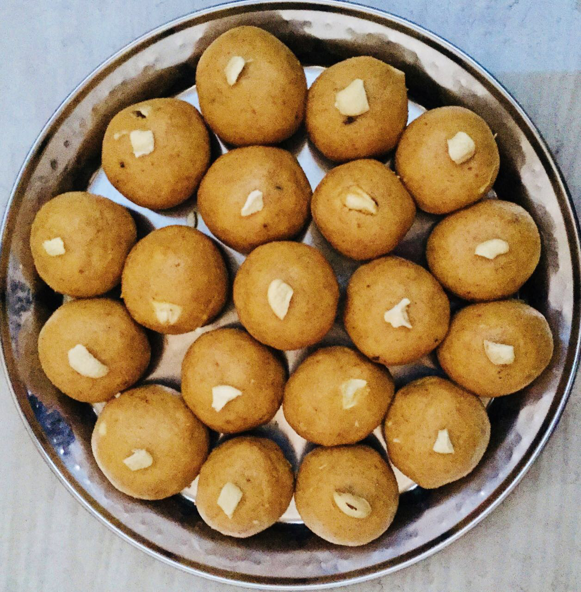
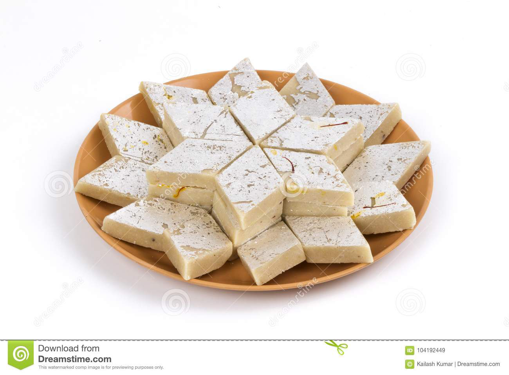
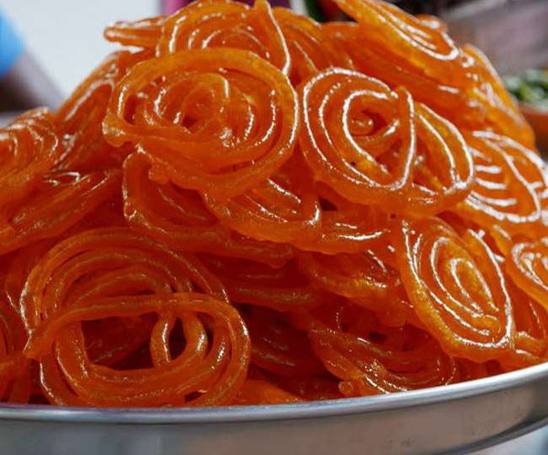
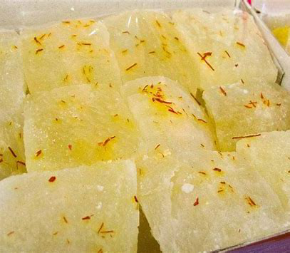
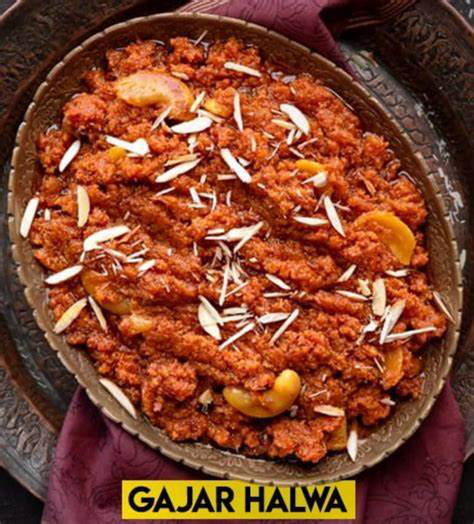

Welcome to Product Name
The best product ever created!
Buy NowGulab Jamun
Gulab jamuns are small balls that are deep-fried and soaked in rose-flavored sugar syrup. It’s a popular dessert recipe across India
Besan Laddoo
Besan ladoo are aromatic and delicious traditional North Indian sweet balls made with gram flour, ghee, powdered sugar & cardamoms
Kaju Katli
Kaju katli , also known as kaju barfi, is an Indian dessert similar to a barfi. Kaju means cashew; barfi is often made by thickening milk with sugar and other ingredients. Kesar kaju katli includes saffron.
Jalebi
Jalebi, also known as Jilapi, zulbia, mushabakand zalabia, is an Indianand Arabicsweet snack popular across South Asiaand the Middle East. It is made by deep-fryingmaida flour batterin pretzelor circular shapes, which are then soaked in sugar syrup.
Petha
Petha, a sweet candy of North India and Pakistan that is made from pieces of ash gourd that are typically soaked in lime water and then cooked in sugar syrup.
Gajar Ka Halwa
Gajar ka halwa, also known as gajorer halua, gajrela, gajar pak, and carrot halwa is a carrot-based sweet dessert pudding made by placing grated carrots in a pot containing a specific amount of water, milk and sugar, cardamom and then cooking while stirring regularly. It is often served with a garnish of almonds and pistachios. The nuts and other items used are first sautéed in ghee, a type of clarified butter from the Indian subcontinent.
"I can't believe how amazing this product is. It has changed my life!"- John Doe, Happy Customer